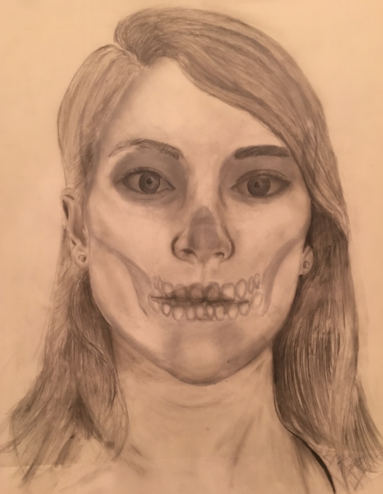
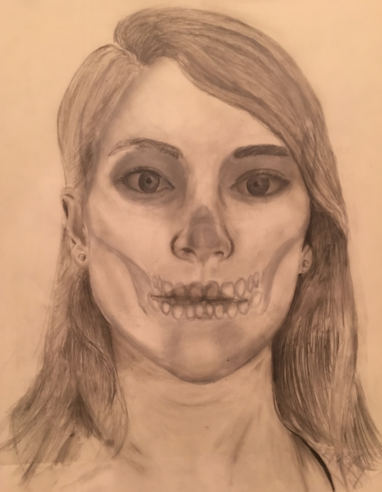

Drawing and Illustration
My tenure as an artist didn't begin with graphic design, however. As a child, my favorite toy was a crayon, and I used up boxes of them before I discovered pens existed. Although I've moved towards digital art in recent years, my first passion was and will always be drawing. Here is some of my work throughout the years.
 

Adobe Photoshop and Illustrator
I've been working with Adobe Suite products for four years now, so I am proficient in Illustrator and Photoshop, and adept at the rest of the programs. If you're interested in looking at some of my graphic design work in which I used Photoshop and Illustrator, feel free to check out the Graphic Design tab.